Zyzygy, Inc. · Goldthwaite, Texas
Kitty's Squeak & Splash
The Official User Guide
Two hunting games for your cat. Paw-proof, no ads, no subscriptions, nothing collected.
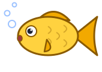
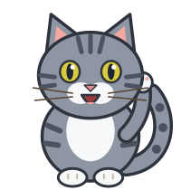
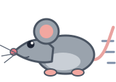
In development for the App Store and Google Play
For iPhone, iPad and Android phones and tablets (best on a tablet). The app is still being built, so every app screen in this guide is an illustration, not a screenshot.
Before we beginHello, human. Your cat has a new favorite thing.
Kitty's Squeak & Splash is a game for cats, run by their humans. You lock the screen, pick a game and lay the tablet flat on the floor. Your cat does the rest: swatting fish in a pond or chasing a mouse across the kitchen floor. Every paw that lands is a catch, with a happy little animation and sound. When the timer runs out, the game winds down and reminds you to finish with a real toy.
It answers the question every cat owner asks first, "how do I stop my cat swiping out of the app?", in Chapter 3. Don't skip it.
What's inside
- What it is, and who it's for
- Getting started
- Locking the screen
- The lock coach and "Locked ✅"
- The grown-up exit
- Fishing
- Mouse Chase
- Settings
- Sessions and nap time
- The Holiday Pack
- Add-on games
- Buying and restoring
- Cat welfare tips
- Our philosophy and your privacy
- Troubleshooting
- FAQ
- Say hello
Chapter 1What it is, and who it's for
It's for cat owners and their cats. It isn't a kids' app. The cartoon fish and mice are there because cats love things that dart, wiggle and splash. It's made for grown-ups (and teens) who share a home with a cat, and the games are tuned for cats: big catch areas for paws, colors cats can see, and prey that moves like prey.
Meet the cast
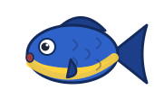
Bluegill Bob, her laid-back sidekick, is blue with a yellow belly and unbothered by everything.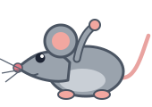
Squeakers is the drama mouse of Mouse Chase. Every catch is a tiny stage faint.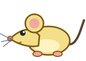
Cheddar, his bolder cousin, thinks the cupboard is a fort.Goldie, Bluegill Bob, Squeakers and Cheddar are real prey in the app. It's all catch and release: everyone gets caught, everyone comes back 1 to 3 seconds later, and nobody gets hurt.
What's free, for keeps
FREE 🐭 Mouse Chase: the Kitchen Floor, with Squeakers and Cheddar.
FREE No ads, no time limits, no "free trial." It's a complete app, not a demo.
Night Pond and the extra pond animals (koi, frog, crab and dragonfly) are free. If they aren't in your version yet, they'll arrive in a free update.
What you need
- iPhone or iPad with iOS 17 or later, or an Android phone or tablet with Android 8.0 or later.
- A tablet is best. Bigger screen, bigger hunting ground. Phones work too, and prey are drawn Large on phones by default.
- No account, no sign-in and no internet connection, except to buy or restore a purchase.
- On your home screen, the icon is labeled Squeak&Splash, because the full name doesn't fit under an icon.
Chapter 2Getting started
- Install Kitty's Squeak & Splash from the App Store or Google Play. There's no account to make.
- Open it. The first time, you'll see a welcome ("A game for your cat, set up by you"), then the Paw-proof coach that shows you how to lock the screen, then a short safety card. You can skip the coach, but please don't. It takes about 30 seconds.
- Pick a game on the main menu: 🐟 Fishing or 🐭 Mouse Chase. A pre-play sheet opens with the scene, speed and timer, and a Locked ✅ or Not locked ⚠️ badge.
- Lock the screen (Chapter 3), so a curious paw can't swipe out of the game.
- Tap Play, then lay the tablet flat on the floor.
- Step back and enjoy the show. When the timer ends, finish with a real toy.
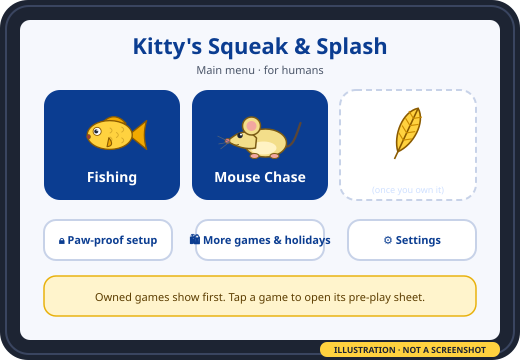
Chapter 3 · The most important pageLocking the screen
Why can't the app just lock itself? Picture a world where any app could trap you inside it and hide the way out. Not great! So Apple and Google built the lock into the device, and only the device's owner can switch it on. That's good for everybody. It does mean we can't flip the switch for you, but we can coach you through it, and we'll show you when it's working.
On its own, the game does what it's allowed to do. It hides the system bars, makes the first swipe from an edge only show a hint, ignores the Android Back button, and keeps every button out of paw's reach. That cuts down on accidents. But to be honest: without the lock, a determined paw can still swipe home. The lock is the real lock.
🍎 iPhone and iPad: Guided Access
Set it up once
- Open Settings › Accessibility › Guided Access and turn it on.
- Tap Passcode Settings and set a Guided Access passcode. You can also allow Face ID or Touch ID.
Start it each time
- Open Kitty's Squeak & Splash.
- Triple-click the side button (iPhone) or top button (iPad). On older devices, triple-click the Home button. If a shortcuts menu pops up, tap Guided Access.
- Check Options (see the table below), then tap Start.
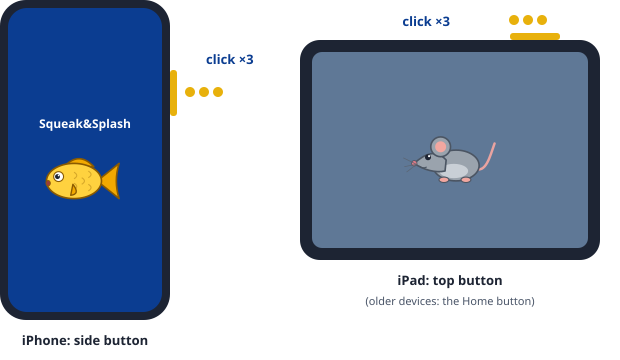
| Guided Access option | Set it to | Why |
|---|---|---|
| Touch | On | Important! With Touch off, the screen ignores every touch, paws included. That's a very boring game. |
| Motion | Off | Stops the screen from rotating when a cat bumps the tablet. |
| Side / Top button, Volume buttons | Off | A paw on a button doesn't do anything. |
| Time Limit | Optional | A backup to the game's own timer. |
| Grown-up exit corner | Your choice | On (the default) keeps the in-game paw corner. Off hides it, so the triple-click is the only way out (Chapter 5). |
🤖 Android: screen pinning
On Android, the app can ask to pin itself to the screen. Android then asks you to confirm, every time. No app can skip that question, and that's on purpose.
- On the main menu, tap 🔒 Paw-proof setup, then the Lock to Kitty's Squeak & Splash button.
- Android asks "Pin app?". Read its note on how to unpin, then confirm.
- Nothing happened? Some phones need pinning switched on first. The coach will show you. It's usually under Settings › Security › Advanced › App pinning, but menus differ by phone maker. Typing "pin" into the Settings search box finds it fastest.
- Turn on "Ask for PIN before unpinning." This is strongly recommended. A cat can accidentally swipe up and hold. With this on, your phone's PIN is needed to get out.
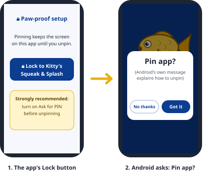
Stay locked between games
This setting is on by default. Pin once from the menu, and the app stays pinned while you switch games, so Android doesn't ask again each time. Tap Done playing on the main menu when you're finished, and the app unpins.
How to unpin
| If your phone uses… | Do this |
|---|---|
| Gesture navigation (swipe bar) | Swipe up and hold |
| 3-button navigation | Touch and hold Back and Overview together |
| 2-button navigation | Touch and hold Back and Home together |
Then enter your PIN, pattern or password if asked. Or just tap Done playing on the main menu.
Chapter 4The lock coach and "Locked ✅"
You don't have to remember Chapter 3, because the app walks you through it. The Paw-proof coach appears the first time you open the app, and it's always on the main menu under 🔒 Paw-proof setup. It's a few short illustrated cards for your kind of device:
- iPhone and iPad: turn on Guided Access and set a passcode, come back and triple-click, then tap Start. The last card says "Try it now" and turns green the moment Guided Access is on. The coach shows the right button clicks for your iOS version.
- Android: one line on what pinning does, the Lock button, help if pinning didn't start, the "Ask for PIN" tip, and how to unpin with your phone's kind of navigation.
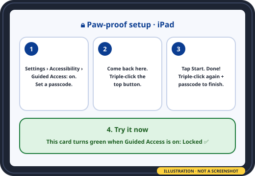
The badge on the pre-play sheet
Every time you open a game, the pre-play sheet tells you where things stand:
Locked ✅ or Not locked ⚠️ · Set up (30 seconds)
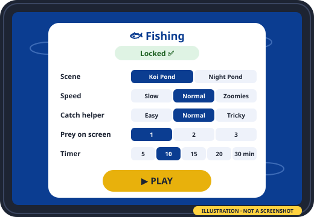
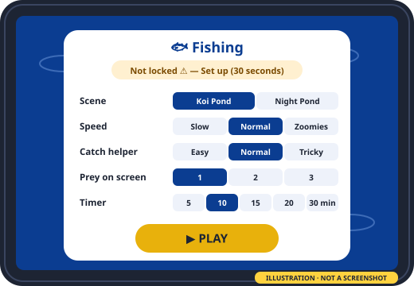
Illustration, not a screenshot. The app is still being built, so the real screens may look different.
- Tap Set up to open the coach. Play is never blocked, though. It's your cat and your call.
- If you play unlocked, you get one friendly reminder each time you open the app, with a Don't remind me option.
- If the lock ends in the middle of a game, nothing dramatic happens. The badge updates the next time you pause.
Chapter 5The grown-up exit
The lock keeps your cat in the app. The grown-up exit is how you get out of a game to pause, change the speed or stop early. A human can do it in about five seconds. A cat, even one lying across the screen, basically can't.
- Find the dim 🐾 paw in the top-left corner (top-right in right-to-left languages). It never moves, and prey never run under it.
- Press and hold it for 3 seconds with one finger. A ring fills up. Keep your finger still, and keep everything else off the screen: a second touch, a big touch (like a cat's belly) or sliding your finger starts the ring over.
- Prove you're human. A panel says something like "Tap 4 · 1 · 7" above a keypad with the numbers shuffled. Tap the three digits in order within 10 seconds. A wrong digit makes the panel shake and start again. If you wait too long, it closes and the game carries on. There's no PIN to remember. (No cat has ever passed it. Several have tried napping on it.)
- The pause sheet opens with the game frozen and the prey hidden: Resume, End session, or Speed − / +.
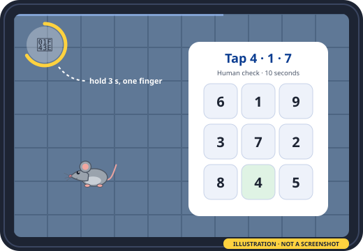
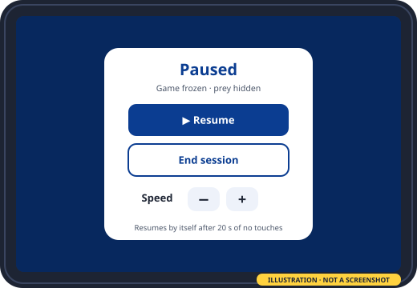
Illustration, not a screenshot. The app is still being built, so the real screens may look different.
Good to know
- The pause sheet resumes by itself after 20 seconds with no touches, so a cat can't "win" by sitting on a frozen screen.
- The grown-up exit leaves the game. It doesn't end Guided Access or pinning. Do that when you're done for the day.
- With VoiceOver or TalkBack on, the paw is a normal labeled button ("Grown-up menu, double-tap and hold"), followed by the same digit check.
Want no corner at all? (iPad, iPhone)
In Guided Access Options, switch off Grown-up exit corner. The paw disappears completely, and the only way out is the triple-click plus your passcode.
If the app gets left anyway
The game pauses immediately and the sound stops. When you come back, you'll see the pause sheet, never the store or settings.
Chapter 6 · Free🐟 Fishing
A top-down pond seen from above. Fish glide in lazy S-curves, then flick away in a sudden burst. They dive (they fade and shrink, leaving a ripple) and pop up somewhere else, hide under lily pads, and dart off if a paw lands near them. Cats do most of their fishing with a swipe, so a paw that drags across a fish counts as a catch too.
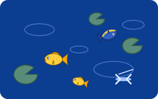
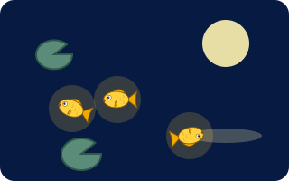
Scene art in this guide is illustrated. The app's own art is still being made.
| Who's in the pond | What they're like |
|---|---|
| 🐠 Goldie | A yellow goldfish. Bright gold on deep blue is easy for cats to see. |
| 🐟 Bluegill Bob | A blue fish with a bright yellow belly. Goldie's laid-back sidekick. Nothing bothers Bob. |
| Koi, frog and crab | More pond pals, so the cast keeps changing. |
| Dragonfly | A flyover that skims the surface. It's the fast, erratic one. |
When a paw lands
A splash ring and sparkles, the fish does a flip and a "bloop," then swims off the screen. A new one arrives 1 to 3 seconds later. Nothing is ever hurt. You'll hear soft splashes and bubble plips. Nothing loud, ever.
Chapter 7 · Free🐭 Mouse Chase
A top-down kitchen floor: tiles, a rug, the edge of a cupboard to hide under, and a mouse hole on each side. Mice move like real mice: dart, freeze, twitch, dart. They make short, fast runs, then freeze with a tiny whisker or tail twitch. They hug the walls, duck under the rug or the cupboard and peek back out, and they run away from or across your cat's path, never straight at it.
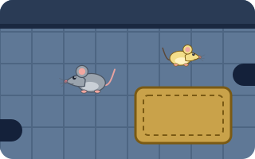
The classic gray mouse. Every catch is a tiny stage faint.
A bright yellow-cream mouse with a dark tail. Squeakers' bolder cousin. Thinks the cupboard is a fort.
- The tail counts. It's a separate, wiggly bit, because cats love to go for the tail.
- On a catch: a puff of stars, a dizzy spin with little stars overhead ("Eep!"), and the mouse scampers into a hole. A new one pops out 1 to 3 seconds later.
- Sounds: tiny squeaks when a mouse freezes or darts (not nonstop), and the skitter of little feet on tile.
Tricks both games use to keep cats interested
- Something new every minute or so. Every 45 to 90 seconds, the game swaps in a different prey or changes the light or ripples. Cats get bored of a toy that never changes.
- A "come back!" call. If nobody has touched the screen for 30 seconds, a prey does something extra tempting with a squeak or splash. After three tries in a row, it stops. The cat has left the building, and we don't nag.
- Multi-cat friendly. Up to four paws at once all count, so two cats can both catch.
Chapter 8Settings
On the pre-play sheet (remembered for each game)
| Setting | Choices (default in bold) | What it does |
|---|---|---|
| Scene and prey | Depends on the game | Pick the scene and which prey join in. Holiday scenes appear here if you own the Holiday Pack. |
| Speed | Slow (kittens and seniors) · Normal · Zoomies | How fast prey dart and swim. |
| Catch helper | Easy · Normal · Tricky | How big the invisible catch area around each prey is. Easy is the most generous. |
| Prey on screen | 1 · 2 · 3 | One is often best for a focused cat. Three suits kittens and multi-cat homes. |
| Prey size | Small · Medium · Large | Phones start on Large. |
| Adaptive help | On · Off | If paws are tapping but nothing's been caught for 45 seconds, prey quietly slow down a little and the catch area grows a little (up to twice). After three quick catches, it eases back. |
| Session timer | 5 · 10 · 15 · 20 · 30 minutes | See Chapter 9. |
Presets: Kitten, Adult (the default) and Senior set speed, catch helper, prey count and size in one tap.
⚙️ Settings (main menu)
| Setting | What it does |
|---|---|
| Sound | Off · Soft · Normal. On iPhone and iPad, sound follows the silent switch unless you turn on Play sound even on silent. |
| Haptics (phones) | A light buzz on each catch. On by default. iPads don't have the hardware for it. |
| Paw Counter | A score for humans. Off by default (Chapter 9). |
| Cat's name | Optional, for up to 3 cats. Used on the Paw Counter card. Kept on this device only. |
| Default timer | The session length new games start with. |
| Colors | Cat-vision colors or Realistic colors. Both are checked for contrast. |
| Nudge | Off by default. Some paws don't register well on glass (very dry or very furry pads). With Nudge on, a near miss makes the prey startle and dart away. It doesn't count as a catch, but your cat still gets a reaction. |
| Reduce motion | Calms the animations on the human screens. Prey motion never changes, because prey motion is the whole point. |
| Reset cat names and totals | Clears the cat names and Paw Counter totals on this device. Purchases aren't affected. |
| Stay locked between games | Android only. On by default (Chapter 3). |
| About, Privacy, Safety tips | The fine print, and the welfare tips from Chapter 13. |
Quick recipes
Chapter 9Sessions and nap time
Every game has a session timer. It's 10 minutes by default, and you can choose 5, 10, 15, 20 or 30. A thin, dim line along the top edge shows how much time is left. You can see it, and it won't distract the cat.
- The wind-down. In the last 30 seconds, prey slow down and head home: fish swim deep, mice duck into their holes. It's a natural finish, not a sudden stop.
- "All done!" A calm, dark blue screen with a sleepy cartoon cat and the message "Great hunt! Now grab a real toy and let them catch it 🧶". The sound stops and the device is allowed to sleep again.
- Play again? Use the grown-up exit (Chapter 5), so a cat can't restart it with a paw. Most cats enjoy a few short sessions a day more than one long one.
- 30 minutes is the most, and there's no endless mode. That's on purpose (Chapter 13).
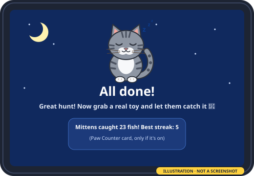
🐾 The Paw Counter (for humans)
Cats don't care about scores, but people love them. Turn on the Paw Counter in Settings to show a small, dim counter in the corner opposite the paw badge: catches, best streak and time played. At the end you get a card like "Mittens caught 23 fish! Best streak: 5." with a fun title earned by catch count, from "Curious Kitten" (1 catch) and "Whisker Warrior" (10) to "Certified Mouser" (25) and "Legend of the Living Room" (50). Biscuit is still waiting for "Certified Pond Pirate." Totals are kept on this device for up to 3 named cats. There's no sharing button and no leaderboard.
If your cat lies down on the screen, the counter may report 🍞 Loaf detected. (See Chapter 15.)
🔋 Battery and heat
The screen stays awake only while a game is playing. If the battery drops to 15% and isn't charging, the game pauses with "Low battery · playing paused." In Low Power Mode or Battery Saver, the game uses a little less power by skipping some background effects. The scenes are dark by default, which also saves power on many screens.
Chapter 10 · $1.99 onceThe Holiday Pack
One purchase, every holiday scene, in every game, all year. A holiday scene swaps in a themed backdrop and adds two holiday "guest" prey that join the game's usual cast, plus its own catch animation and sounds. It works in Fishing, Mouse Chase and every add-on game. (A game's own star, like Feather Frenzy's feather lure, stays put, and the guests run and flutter around it.)
At launch: two scenes
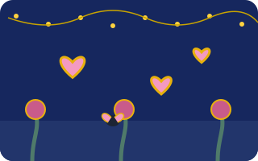
💗 Heart Flutters
A twilight rose garden with soft gold fairy lights. Flutter hearts (pink with bright gold outlines, because red alone looks dull to a cat) zigzag like butterflies, hover, climb and land on a rose. Lovebugs, tiny beetles with heart-shaped wings, scurry along the stems and freeze. A caught heart pops into a puff of mini hearts with a soft "pop!" and a little "mwah."
🥚 Egg Hunt
A spring meadow full of daffodils. Wobble eggs in blue and yellow wobble, roll, hop and hide in the grass. A bunny tail pops up, wiggles and ducks down. A caught egg cracks open to a random surprise: a chick that peeps and scurries off (bonus prey for 5 seconds), confetti, a butterfly, or a rolling jelly bean. The surprises are free and just for fun. Nothing is ever for sale inside an egg.
And more as we make them
More holiday scenes are added over time, at no extra cost to Holiday Pack owners. They arrive in regular app updates (we don't have servers, so everything ships inside the app), so keep the app updated. We don't announce them ahead of time. You'll find out what's new in the update notes. The in-app store always shows what's actually included today, for example "2 holiday scenes so far, more as we add them."
- Featured, never locked. In the weeks before a holiday, its scene gets an "In season" ribbon in the store, and owners see it suggested on the pre-play sheet. But every scene plays all year. Egg Hunt in October? Sure. Cats don't read calendars.
- Buy it any day, not just in season. Nothing pops up during play, ever.
- No bangs, booms, fireworks or party horns, in any scene. Many cats are afraid of them.
Chapter 11 · $0.99 each, onceAdd-on games
Want more than fish and mice? Three more games are available at launch. Each one has its own scene and its own prey, all the usual settings, the grown-up exit and Paw Counter, and it works with the Holiday Pack.
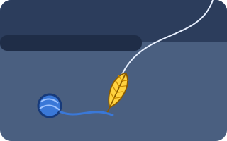
🪶 Feather Frenzy
The wand toy, without the tired arm. A feather lure on a visible, springy string swoops in arcs, drags along the floor, flicks, hides behind the couch and peeks out, then dangles and twitches. There's a yarn-ball version too. The lure "lands" often, so your cat gets real catches.
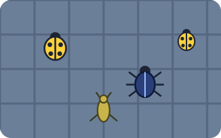
🐞 Bug Bonanza
Beetles, ladybugs and crickets doing what bugs do best: being annoying. They scurry and freeze along the tile lines, crickets hop, beetles flip over and right themselves, and little swarms scatter after a near miss. Bugs are small, so the catch area starts out extra generous.
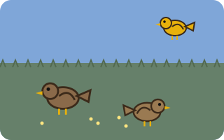
🐦 Birdie Buffet
Cat TV, but this time she gets to play. Sparrows and a finch hop, peck, freeze and look around, then flutter a short way when a paw lands nearby. Now and then one flies across the top. Soft chirps and wing flutters set the mood.
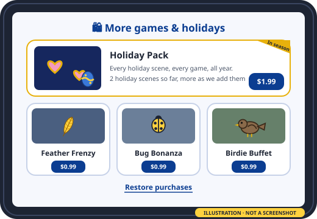
Each game in the store has a 5-second preview loop so you can see it move before you buy. Games you haven't bought can't be started, and there are no time-limited trials. The free games are the free trial, and they're free forever. Everything at launch (the Holiday Pack plus all three games) comes to $4.96.
Chapter 12Buying, Family Sharing and restoring
The rules we sell by
- Every purchase is one-time. You buy it once and keep it.
- No subscriptions, no coins, no "special offer" pop-ups, and no timers on free play.
- Nothing can be bought from inside a game. The store is only on the main menu, so a paw can't buy anything by accident.
- Restore purchases is always visible in the store.
What's for sale
| Holiday Pack | $1.99 |
| Feather Frenzy | $0.99 |
| Bug Bonanza | $0.99 |
| Birdie Buffet | $0.99 |
US prices. Your store shows the price in your country.
👨👩👧 Family Sharing (iPhone and iPad)
Family Sharing is on for every purchase. Buy the Holiday Pack once, and everyone in your Apple Family Sharing group can use it on their own devices. It shares the purchase only. Each device keeps its own settings and Paw Counter.
On Android, purchases belong to the Google account you bought them with, and they come back on any Android device signed in to that account.
Restoring purchases (new phone, new tablet, reinstall)
- Sign in to the same Apple account or Google account you bought with.
- On the main menu, tap 🛍️ More games & holidays.
- Tap Restore purchases. Your games and Holiday Pack unlock again.
Got a gift code? Tap Redeem code in the grown-up area on the main menu and type it in. The extra it's for unlocks right away.
A purchase that's waiting for approval (like Apple's Ask to Buy) unlocks once it's approved. Settings, cat names and Paw Counter totals only move to a new device through the device's own backup (Chapter 14).
Chapter 13Cat welfare tips
We built this for cats we love, so here's the honest advice. The app shows these tips on first run and in Settings › Safety tips, too.
🧶 End with a real catch
On-screen prey can't truly be caught, so every session ends with the "now grab a real toy" reminder. Finish with a wand toy or a kicker your cat can grab and bite, or a treat. Cat experts recommend letting cats complete the whole hunt, right to the "got it!" part. The catch animations help, and the real toy finishes the job.
⏱️ Short and often
The default is 10 minutes. Most cats do best with a few short play sessions a day. The American Animal Hospital Association suggests two or three sessions of 10 to 15 minutes. Stop sooner if your cat seems frustrated (tail lashing, biting the screen, growling) or wanders off.
📱 Protect the screen, and the cat
- Lay the tablet flat on the floor, not propped up or near a table edge. Use a protective case.
- A tempered-glass screen protector is cheap insurance against scratches. Bare glass usually holds up well to claws, but thin plastic film protectors may not, so we suggest glass.
- Keep claws trimmed, and wipe the screen afterwards.
- Unplug the charger during play. Cats chew cords. Charge before the session instead.
- Stay nearby. Don't leave a cat alone with a device, and watch for chewing.
- Not for cats with known light-triggered seizures. The app has no flashing, no strobing and no sudden loud noises, but check with your vet if you're unsure.
🔦 Why there are no laser dots
A laser dot is the one "prey" a cat can never catch. Studies of laser-pointer play (Kogan and Grigg, 2021 and 2022) found that cats who played with lasers often were more likely to show repetitive behaviors their owners noticed, like chasing lights and shadows. Those studies show a link, not proof that lasers cause it. But we'd rather every hunt end in a catch. So there's no laser dot in Kitty's Squeak & Splash. Every fish, mouse, bug and feather gets caught (and released).
These are general tips, not veterinary advice. Kitty's Squeak & Splash is a game, not a health product. Your vet knows your cat best.
Chapter 14Our philosophy and your privacy
We make apps the way we'd want them for our own family (whiskered members included). Our apps are inexpensive, and you pay once for what you want. There are no ads, no subscriptions and no accounts, and we don't collect or share any data. Kitty's Squeak & Splash keeps everything on your device.
Ads are especially bad in cat games. A cat can't close an ad, and a cat definitely shouldn't be tapping "Buy." So there aren't any.
Kitty's Squeak & Splash comes from Zyzygy, Inc., a small company in Goldthwaite, Texas.
What we don't do
- No ads, ever
- No subscriptions
- No accounts or sign-in
- No analytics or tracking
- No data collected or shared
What the app keeps, and where
Your settings, the optional cat names (up to 3) with their Paw Counter totals, whether you've seen the coach, and your "stay locked" choice. That's it. It's stored in one small file in the app's own storage on this device. Zyzygy has no server and never receives any of it.
The fine print, in plain words
- Store privacy labels: "Data Not Collected" on the App Store, and "No data collected · No data shared" on Google Play.
- No camera, microphone, location or contacts. No photos, no sharing button, no chat.
- The internet is only for purchases. Buying or restoring goes through Apple or Google under their privacy policies, and we never see your payment details. Everything else works offline.
- No "rate this app" pop-ups. Nothing interrupts the hunt.
- Backups: App data stays on the device. If you have Android's own backup turned on, the system may include it in your personal Google account backup so it can be restored to a new device. On iPhone and iPad, your own iCloud Backup or computer backup may include it the same way. Zyzygy never receives or can see those backups.
- Deleting: Reset cat names and totals in Settings clears those, or delete the app to remove everything it kept. Your purchases stay with your Apple or Google account, ready for Restore.
Chapter 15Troubleshooting
My cat got out of the app.
Check the pre-play sheet for Locked ✅. Without the lock, a paw can still swipe home (Chapter 3). On iPhone and iPad, start Guided Access with the side or top button set to off. On Android, turn on Ask for PIN before unpinning, since a swipe-and-hold from a paw can unpin otherwise. Good news: the game paused itself the moment it was left, and you'll come back to the pause sheet.
My cat isn't interested.
Try a different speed (Slow for careful hunters, Zoomies for the athletes), 1 prey for focus or 3 for kittens, the other game, or another scene. Turn the sound to Soft or Normal, because the squeaks and splashes matter. Put the tablet flat on the floor at cat level, and try when your cat is in a playful mood (often around dawn and dusk). Some cats just aren't screen cats, and that's OK. The free games let you find out without spending a cent.
Paw taps aren't counting.
Set Catch helper to Easy and Prey size to Large. Turn on Nudge in Settings for cats whose pads don't register well on glass. Touches right at the very edge of the screen are ignored on purpose (that's where system swipes live). A thick screen protector can make any touchscreen less responsive.
The sound is too loud (or too quiet).
Choose Off, Soft or Normal under Settings › Sound, and use the device's volume. Set the volume before starting Guided Access if you've turned the volume buttons off. On iPhone and iPad the silent switch mutes the game unless Play sound even on silent is on. Every sound in the app is short and soft. There are no bangs or booms.
My cat lies down on the screen.
Classic. Big touches like a belly, a tail or a whole cat loaf never count as catches and can't open the grown-up exit. If a cat settles in, the prey scatter to the far side of the screen and keep playing there, which often gets the cat back up. The Paw Counter may even report 🍞 Loaf detected. (Why do cats sit on tablets? To keep an eye on the mouse.)
The battery drains fast, or the tablet gets warm.
Shorter sessions help, and the timer ends play anyway. The game pauses at 15% battery when it isn't charging, uses less power in Low Power Mode or Battery Saver, and lets the screen sleep after "All done!". Please don't play while it's plugged in, because of the cord-chewing.
Tapping "Play again" does nothing.
That's on purpose, so a cat can't restart the game. Use the grown-up exit: hold the 🐾 for 3 seconds, then tap the digits.
I bought the Holiday Pack, but a scene I've heard about isn't there.
New scenes arrive in app updates. Update the app from the App Store or Google Play. If the pack itself looks locked, tap Restore purchases.
My purchase isn't showing.
Tap 🛍️ More games & holidays › Restore purchases while signed in to the account you bought with.
Pop-up notifications distract my cat.
On Android, pinning hides them. Otherwise, turn on Do Not Disturb before playing.
Chapter 16FAQ
Is this a kids' app?
No. It's made for grown-ups (and teens) who own cats, and for their cats.
Is it really free?
Yes. Fishing and Mouse Chase, with every setting, are free forever, with no ads and no time limits. The Holiday Pack and add-on games are optional extras.
Is anything a subscription?
No. Every purchase is one-time.
Could my cat buy something?
No. There's no store, button or link anywhere in a game. The store lives only on the main menu.
Will future holiday scenes cost extra?
Not if you own the Holiday Pack. Holiday scenes we add later are included at no extra cost.
Does it need the internet?
No. Only buying or restoring a purchase does, through Apple or Google.
Where's the app on my home screen?
Look for Squeak&Splash under the icon. The full name is a bit long for that spot.
Does it play secret sounds only cats can hear?
No. Phone and tablet speakers play sounds in the range people hear, too. The squeaks and splashes are recordings or sounds we made ourselves, short and soft.
Can two cats play at once?
Yes. Up to four paws at once all count. Try 2 or 3 prey on screen.
Is it good for my cat?
It's play. Play it the way Chapter 13 describes: short hunts, a real toy at the end, and you nearby. It's a game, not a health product.
Is it accessible for the humans?
The menus and settings follow your text size (Dynamic Type on iPhone and iPad, font size on Android), work with VoiceOver and TalkBack, and meet WCAG AA contrast. The grown-up exit has a VoiceOver and TalkBack version (Chapter 5).
The end of the huntSay hello
Questions, ideas, or a story about the greatest hunter in your house? We'd love to hear it.
support@zyzygy.us
We reply within 2 business days.
Website: zyzygy.us
Kitty's Squeak & Splash is in development for the App Store and Google Play. App screens and scenes in this guide are illustrations. Prices are set by the stores and shown here as US prices. © Zyzygy, Inc., Goldthwaite, Texas.